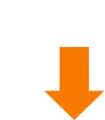
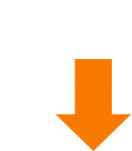

За относительно короткий срок создали
компанию, конкурирующую сегодня
с лидерами индустрии.
AMarkets 2-й год подряд уверенно
занимает второе место в рейтинге топ-3
мировых брокеров по проценту
успешных клиентов.
Более 40% трейдеров AMarkets из года
в год зарабатывают благодаря торговым
условиям, продуктам, сервисам и
консультациям компании.
Постоянно расширяем список
торговых инструментов.
Сегодня нашим клиентам доступно более
1600 финансовых активов. Среди них
совсем недавно появились сразу 8
криптовалют!
Мы добились максимально быстрой
скорости исполнения ордеров.
Сегодня она равна 30 мс – это в 16 раз быстрее,
чем в среднем по индустрии.
Более 150 000 клиентов по всему миру
Финансовая надежность AMarkets подтверждена крупнейшей аудиторской компанией Ernst & Young
AMarkets тесно сотрудничает с крупными
IT-компаниями индустрии – X Open Hub и
Tradency. Благодаря этому наши клиенты получили
наиболее выгодные условия использования
прогрессивных сервисов для копитрейдинга и
алготрейдинга.
Mirror Trader, xStation, xSocial и RoboX
Сегодня специалисты AMarkets – это
желанные гости крупных мероприятий,
посвященных вопросам развития индустрии:
Международный Форекс Конгресс, China
International Online Trading Expo, саммит Forex
Magnates, Financial Expo и многих других.
Москва
Санкт-Петербург
Екатеринбург
Алматы
Уфа
Сочи
Астрахань
Самара
Киев
Ростов
Ярославль
Красноярск
Архангельск
Новосибирск
Мы уже посетили более 20 крупных городов
России и СНГ с авторской конференцией о
заработке на финансовых рынках и не собираемся
останавливаться!
 

Специалисты компании разработали
собственную лабораторию вспомогательных
инструментов:
индикаторы рыночных настроений Кайман, COT,
совокупная позиция,анализатор торговли и
торговые сигналы – все, что помогает клиентам
увеличивать прибыль.
AMarkets стала почетным членом
Международной Финансовой Комиссии,
которая регулирует брокерскую деятельность и
предоставляет клиентам компенсацию в размере
$20 000 на каждую претензию.
Мы провели успешные и полноценные
торговые сессии во время Brexit и
Президентских выборов США, в то время как
многие брокеры ограничивали торговлю.
Благодаря этим новостным поводам более 60%
клиентов AMarkets получили ощутимую прибыль.
Аналитики AMarkets разработали
7 эксклюзивных инвестиционных портфелей
с доходностью более 10% в месяц.
Мы разработали целый ряд обучающих программ для начинающих трейдеров и инвесторов. Однако мы пошли дальше и в настоящем помогаем продвинутым участникам рынка разобраться в новых возможностях торговли, продуктах и услугах.
Лидогенератор
Лидогенератор
Веб-мастер
Веб-мастер
Агент
Агент
За 7 лет существования департамента партнерских
программ мы создали гибкую систему
сотрудничества, где каждый находит для себя
оптимальный вариант и зарабатывает на
финансовых рынках без риска.
Кстати, мы уже выплатили более $12 000 000 партнерам!
В честь 10-летнего юбилея мы увеличили
ставки вознаграждения партнеров на 20% и
на сегодня это самая выгодные условия в мировой
брокерской индустрии.
много ресурсов и сил
в развитие индустрии,
за что заработали
высокие награды:
Открытие года Newsland 2009
Лучшая обучающая программа ShowFX 2011
Динамичное развитие IAFT Awards 2012
Самый быстро развивающийся STP-брокер Азии 2013
Самое быстрое исполнение ордеров IAFT Awards 2014
Самый высокий процент успешных клиентов IAFT Awards 2014
Лучший форекс-брокер на рынке партнерских программ RACE Awards 2015
Лучшие партнерские программы финансовых рынков RACE Awards 2016